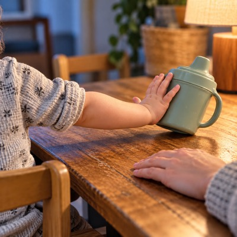
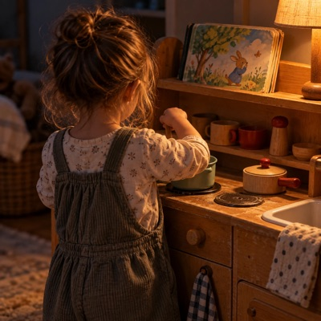

A developmental-science education for parents
Understand your child.Understand yourself.Understand your influence.
Self-paced classes in child development for parents of children 0 to 5, built from peer-reviewed research and taught in short video lessons. Each class takes a few evenings, not a semester.
Taught by Matthew McArthur, Child Development Specialist. M.A. in Developmental Psychology (SDSU), B.A. in Psychology (UCLA), and more than 100 families coached in Los Angeles.
In my work with families, the parents who do best are, almost without exception, the ones who understand the science.
Matthew McArthur, founder
Six years studying developmental psychology and two years coaching families in Los Angeles taught me one consistent thing. Parents who know how development works stay calmer, read their children more accurately, and change the things that actually matter. Not because they memorized scripts, but because they can see what is happening in front of them.
Every class teaches you to see three things.
- Your child
- What is being built at this age, what is typical and what is not, and why the hardest behaviors are so often the development itself, showing up on schedule.
- Yourself
- How your own nervous system, history, and stress enter the room, and what regulation actually looks like in an adult, because a child’s calm is borrowed before it is owned.
- Your influence
- Which parts of the environment shape development (conversation, routines, serve and return) and which worries the research lets you set down for good.
Matthew McArthur teaches every class: a Child Development Specialist in Los Angeles who has coached more than 100 families and teaches an Infant and Toddler Socialization class. About Matthew →
The curriculum, in developmental order.
Four classes, each built around one developmental window. Start with the one your family is in now, or take them in sequence as your child grows. Every class is self-paced and yours for life.
-
Class 1 · Birth to 12 months
Cues, attachment, and the first year
After this class you can explain why responsive care builds security rather than spoiling, what infant sleep actually looks like across the first year, and how language begins long before the first word.
Open now
-

Class 2 · Toddler years
Language, autonomy, and big feelings
After this class you can explain why “no” is a milestone rather than defiance, what a meltdown is neurologically, and how your calm becomes the scaffold their regulation is built on.
-

Class 3 · Preschool years
Self-regulation, play, and readiness
After this class you can explain why pretend play is serious cognitive work, how executive function develops on a wide normal range, and what kindergarten readiness means in the research rather than in the brochure.
Open now
-
Class 4 · Family systems and stress
How the whole family shapes the developing child
After this class you can explain how household stress reaches a child’s nervous system, why your own regulation is a developmental variable, and which protective factors hold up inside real families.
In development
Taught like a seminar. Built for a Tuesday night.
Short video lessons, watched in any order at any hour. The research is shown rather than hidden, and the goal is a mental model you can carry, not a script to recite. The five teaching principles are on the About page.
- Lessons of about ten minutes
- Self-paced, lifetime access
- Sources cited

Growing Minds AI · Free to try
Office hours, any hour.
Ask the question that came up at bedtime. Growing Minds AI answers from a curated library: peer-reviewed developmental research, the milestone data behind our tracker, and the class curriculum itself. Every answer shows where it is grounded, and points you to the lesson that covers it in depth.
Five free questions a day with no account; unlimited with the toddler class. Educational only, never medical advice.
Free reading and tools, between classes.
Written and built the same way the classes are taught. No account needed, so you can see whether the approach fits your family before you enroll.
Reading
Research explained without buzzwords or parenting shame.
- What “serve and return” actually meansThe ordinary loop that builds the architecture.
- The toddler “no” is not the war you think it isAutonomy, on schedule.
- When your own nervous system is the variableCo-regulation, from the adult side.
Tools
Interactive tools for the moments between lessons.
- Growing Minds AIAsk a parenting question. Every answer shows its sources.
- Milestone trackerWhat is typical at each age, birth to three.
- Claims libraryCommon parenting claims, checked against the research.
Three classes are open now. One payment each, for life.
One payment, no subscription, lifetime access at your own pace. Enroll and start the first lesson tonight, on any device.
-
Class 1
Birth to 12 months
Captions and a written version of every lesson
Create a free account, then pay with Stripe; lessons live in My classes. Not sure yet? Watch a lesson free.
$49
Enroll in Birth to 12 months -
Class 2
Toddler years, 1 to 3
Unlimited Growing Minds AI, for life
Opens Thinkific, our course platform, in a new tab. Already enrolled? Log in on Thinkific (opens in a new tab).
$49
Enroll in Toddler years (opens Thinkific in a new tab) -
Class 3
Preschool years, 3 to 5
Create a free account, then pay with Stripe; lessons live in My classes.
$35
Enroll in Preschool years
Full refund within 14 days if you’ve watched 4 lessons or fewer.
Before you enroll
Can I try the approach before I pay?
Yes. Watch “Serve and Return” free, a full lesson from the infant class, with no account. The articles, free tools, and Growing Minds AI are written the same way the classes are taught.
Do I need any background in psychology?
No. The classes assume you are intelligent and busy, not that you have read the literature. Every term is explained the first time it appears.
How long do I have access?
For life. One payment, no subscription, no deadlines. Watch on your phone, tablet, or laptop, in any order.
Can I get a refund?
Yes. Within 14 days of buying, and as long as you’ve watched 4 lessons or fewer, you get a full refund: email Matthew with the address you bought with. The free lesson doesn’t count toward the four. A refund ends your access to that class.
Is this medical or psychological advice?
No. The classes are educational. For concerns about your own child, your pediatrician and your child’s clinicians are the right people to ask, and the classes will help you ask better questions.